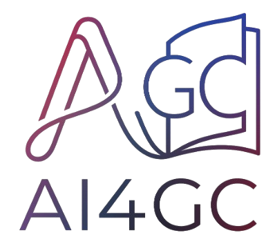

01TRACK THE MANIFOLD

01 TEST-TIME OBSERVATION
THE TRAJECTORY
DOESN'T STAND STILL.
LOADING CSV
02 THE DECISION ENGINE
COMPUTE ONLY
WHEN UNCERTAIN.
A dual-state estimator tracks feature change and its uncertainty, then makes one bounded decision at every denoising step.
Full compute for Nalign steps
measure ΔI, ΔO → init r̂₀, P₀
Project ratio state + uncertainty
ΔÔₜ = r̂ₜ|ₜ₋₁ · ΔIₜ
Accumulate predicted observation error
ε 0.000τ 0.070
Reuse cached feature
Compute + rectify state
LIVE DENOISING TRACEALIGNMENT
COMPUTE SKIP UPDATESTEP 01 / 29
03 THE RESULT
SKIP COMPUTE.
KEEP THE MOTION.
No training. No offline calibration. One plug-and-play cache across video diffusion backbones.
TEACACHEOFFLINE FIT
NAVICACHESELF-CALIBRATED
NaviCache: Test-Time Self-Calibration Caching for Video Generation